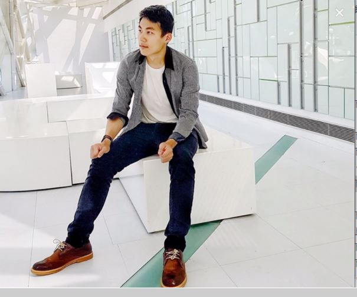

Chiang-Chieh-Kai
Email:cjk123cjk@gmail.com
Curriculum Vitae
- 我在大學主要是學地球科學，而在系上的數劇分析課上，發現電腦在做研究跟資料處理上，十分的重要，也在此時與程式有了更深的接觸，很多問題需要程式去解決，寫程式是個需要動腦又有點像小時候堆積木的事。也從中發現寫程式的好玩跟艱難。
- 之所以會想往寫網頁的方面發展當作未來求職的方向，是因為在製作網頁過程中，一點一滴的把網站的架構跟內容給蓋好，是很有成就感，看著自己做得工具卻可堆疊出全新的物品，十分的有趣。
- 日常休閒我喜歡打桌球、籃球。運動對我的生活是很重要，可以讓人放鬆心情，讓課業的壓力釋放掉，對於轉換自已的心情也很有幫助，活力正能量能讓人開心，所以也希望在個有活力的公司工作，大家做什麼事都很有精神，一起讓公司更好。平時熱愛學習新事物，學習到新的東西，就有一種雀躍感在心中沸騰，生活中就是要不停的去嘗試，讓自己變得更好。
畢業學校：國立中央大學-地球科學系所
程式技術
- HTML CSS JavaScript
 C++
C++- Matlab Python